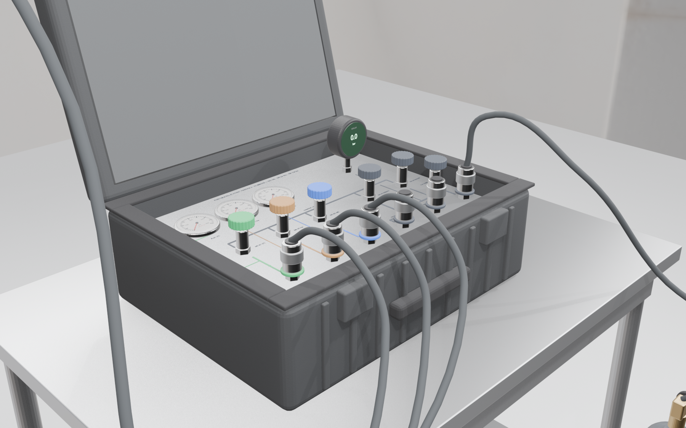
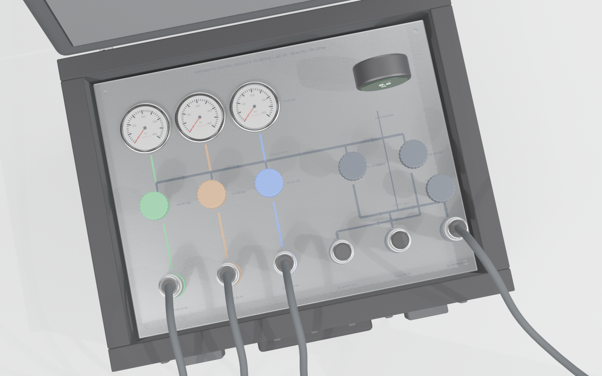
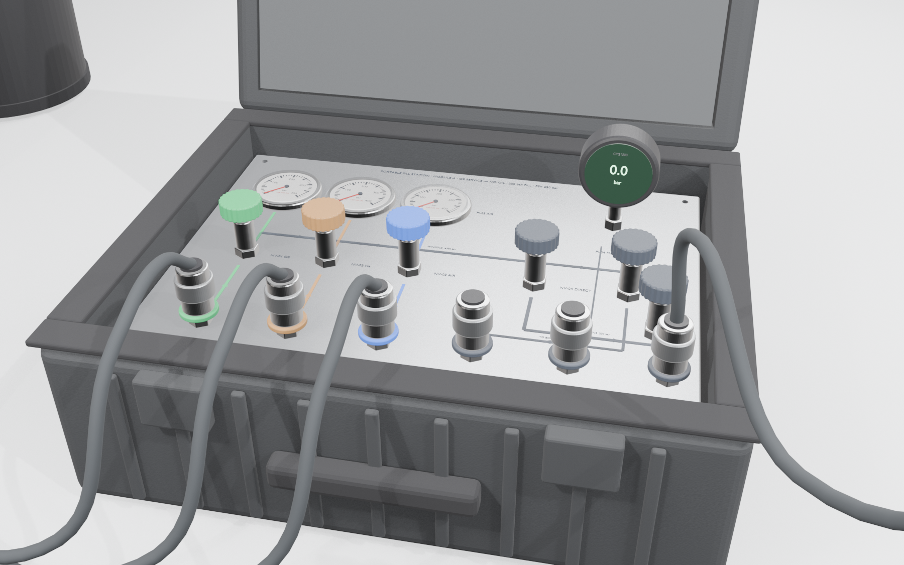
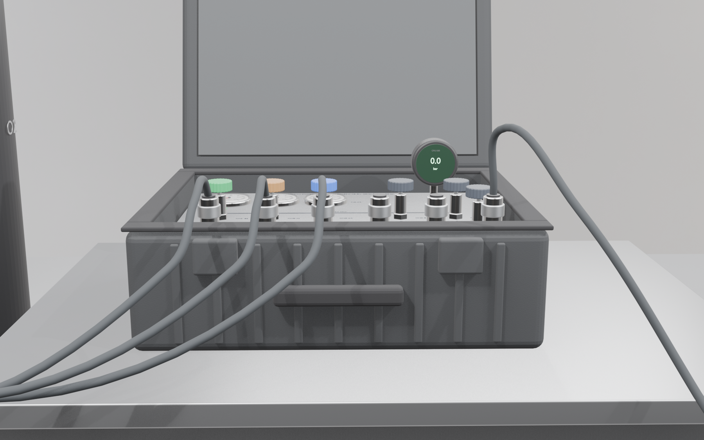
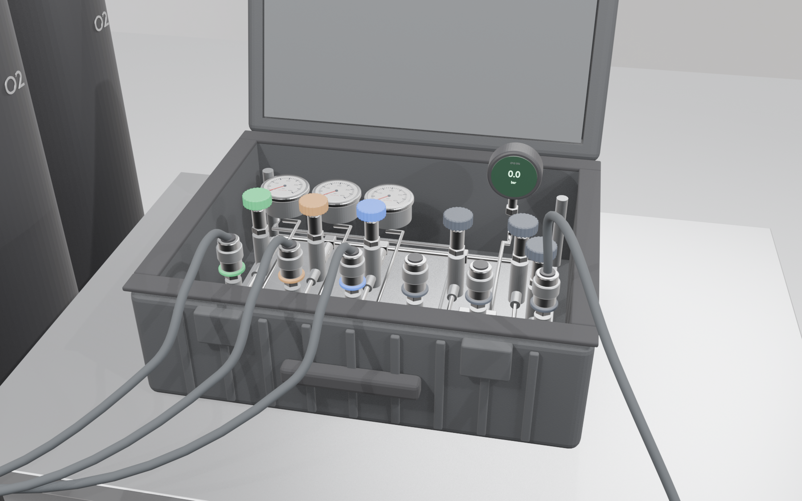
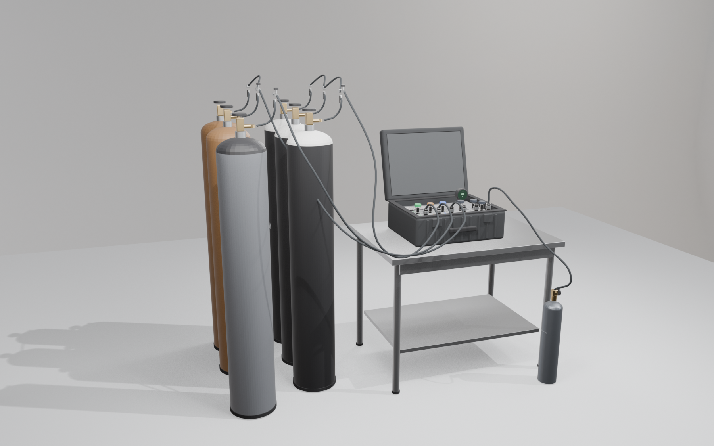

Plate layout — positions from the plate's back-left corner
| Row | Items | x from left (mm) | y from back (mm) | Note |
|---|---|---|---|---|
| Back | PI-01 · PI-02 · PI-03 | 60 · 135 · 210 | 75 | 63 mm dry gauges, one per supply column, colour band under each |
| Back | PI-04 | 380 | 75 | digital master gauge, upright, screen towards the operator |
| Back-left | VB-01 | 20 | 20 | vent bulkhead stub with deflector, through the case wall behind the plate |
| Middle | NV-01 · NV-02 · NV-03 | 60 · 135 · 210 | 185 | supply needle valves, knob colour = gas |
| Middle | NV-04 · NV-05 | 320 · 400 | 185 | DIRECT and TO BOOSTER, black knobs |
| Front | QC-01 · 02 · 03 | 60 · 135 · 210 | 290 | inlet couplings under their own columns, colour band in gas colour (not keyed: labels and bands identify the gas) |
| Front | QC-04 · 05 · 06 | 285 · 360 · 435 | 290 | booster suction, booster return, product — black rings |
| Front-right | V-01 | 425 | 235 | fill-line bleed, black knob, between NV-05 and QC-06; discharges under the plate to VB-01 |
Depth check
- Body interior depth 149 mm. Plate top at 119 mm above the floor (30 mm below the rim), so 115 mm clear under the plate for valve bodies, check valves, the relief valve and ¼ in tube runs. A Swagelok N-series body with two tube fittings is about 70 mm deep.
- Above the plate the needle-valve knobs stand 56 mm and the supply gauges 10 mm. Both clear the 30 mm rim gap plus the 44 mm lid recess, 74 mm in all, so the lid closes over them with the whips coiled in the organiser.
- The digital master gauge does not clear it. The modelled PI-04 envelope stands 100 mm above the plate against 74 mm available, and no candidate case fixes that — Case N Foam's EW4920 gives the same 74 mm and its EW4820-W gives 81 mm. PI-04 needs a lower instrument, a recessed mount, or shorter standoffs: 86 mm in place of 112 mm would open the rim gap to 56 mm and still leave 86 mm under the plate, against the roughly 70 mm a valve body with two tube fittings needs. Settled before the plate is cut. An earlier version of this page said both items fitted, which its own figures contradicted.
- The vent bulkhead exits the back wall behind the plate, below the rim, so the discharge is outside the case with the lid open or shut.
Rendered views






How the model is made
A parametric Blender script (models/build_panel.py) builds every part from the BSD-PFS-003 numbers: the case as a bevelled tub with a hinged, recessed lid; the plate with its Ø67, Ø14.5 and Ø6.5 holes cut; gauges with bezel, dial, ticks, numerals and a needle; needle valves with knurled knobs in gas colours; couplings on bulkhead adaptors with colour rings; the digital gauge; engraved tags and paint-filled bands; the fill whip as a bevelled curve to a 3 L cylinder; the under-plate ¼ in tube runs laid out to the P&ID with tees, check valves, the relief valve and the vent run to VB-01; the painted flow mimic; and the three cascade sets with 47 L cylinders, pigtails, check valves, tee chains and bleeds. The source file is models/portable-fill-panel.blend; the web viewer loads the exported models/panel.glb. Changing a position on the GA and re-running the script regenerates everything.
What this pass does not decide
- Exact coupling and gauge models — the geometry uses class-level envelopes. Positions are set with 75 mm pitch so any of the candidate couplings fits.
- Exact tube routing under the plate. The runs shown follow the P&ID topology at class-level fitting sizes; bend positions are fixed at fabrication once the valve models are in hand.
- Case colour and lid organiser. Shown black; a yellow or orange case is the usual choice for a boat deck.